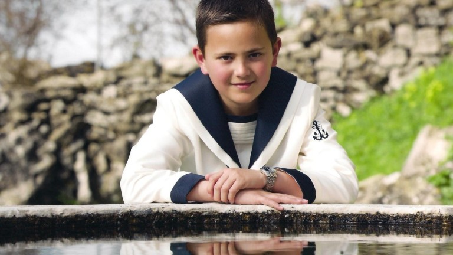

Como alumno promedio de 17 años de bachillerato, estoy en la etapa final de mi educación secundaria y me encuentro en un punto crucial de mi vida. Tengo una variedad de intereses que van desde deportes y música hasta ciencias y reportero, y estoy explorando diferentes opciones para mi futuro académico o profesional.
Me comprometo con mis estudios y busco mantener un rendimiento notable para cumplir con los requisitos de graduación de bachillerato, aunque a veces puedo tener algún bache fortuito en mi dedicación académica. Además, siento la presión social de mis compañeros, lo que a veces puede influir en mis decisiones y comportamientos dentro y fuera del entorno escolar. Estoy en medio de un proceso de descubrimiento personal y definición de mi identidad. Experimento cambios emocionales significativos y estoy lidiando con temas como la autoestima, las relaciones interpersonales y la presión por el futuro.
Estoy pensando en mis opciones posteriores a la escuela secundaria, ya sea ingresando a la universidad, buscando empleo o considerando otras formas de educación o capacitación. Como cualquier adolescente, enfrento desafíos personales, familiares o académicos que pueden afectar mi desempeño y bienestar general. Sin embargo, estoy comprometido a superar estos obstáculos mientras me preparo para la siguiente etapa exitosa de mi vida.